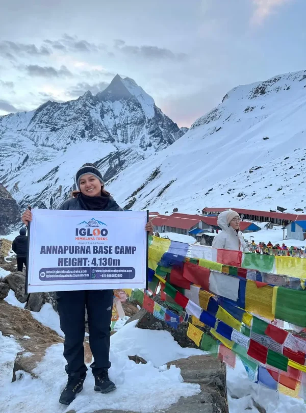
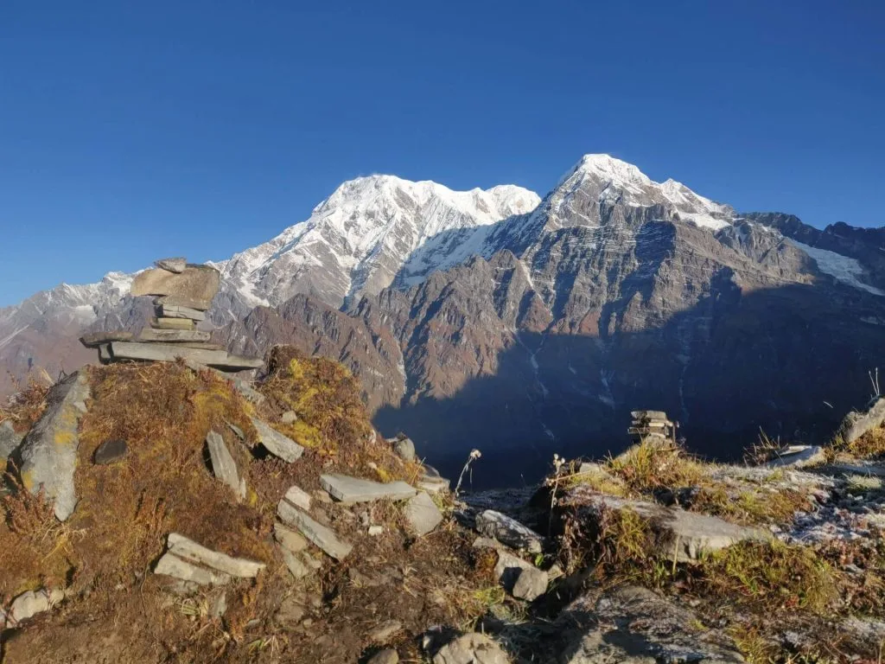
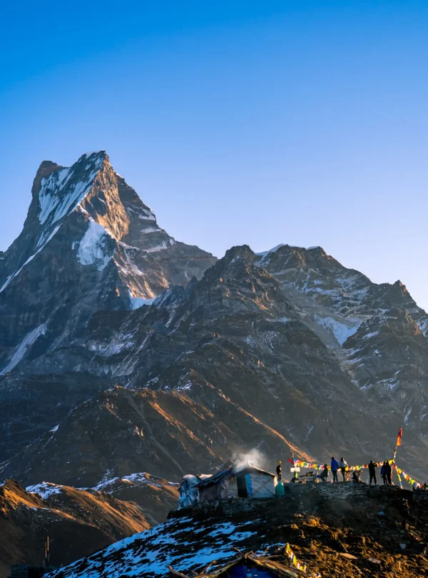
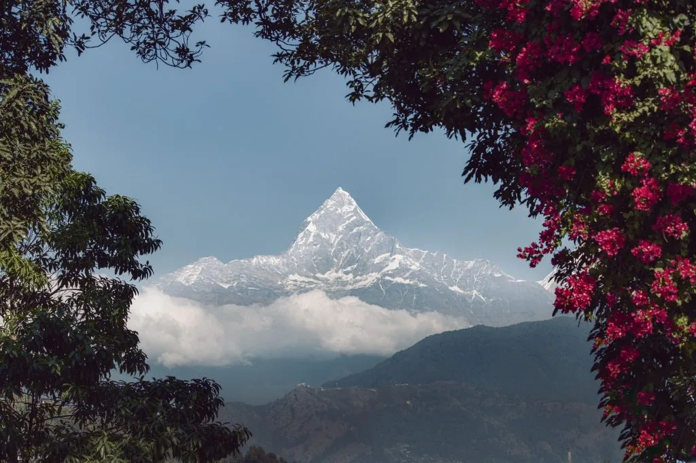
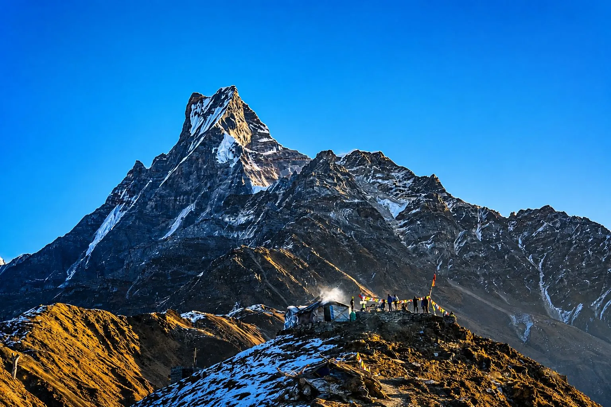

Our Annapurna Base Camp with Mardi Himal Trek (12 Days) with Igloo Himalaya Treks went beyond every expectation we had. What first pulled us towards them was their strict safety protocol and personal care. From the landing at Lukla to reaching Everest Base Camp (5,364m) and Kala Patthar, Sagar and the team made sure we were comfortable, safe, and hydrated every single day!
Annapurna Region • Ultimate Two-in-One Sanctuary & Ridge Trek
5.0
reviews on TripAdvisor
5.0
169 reviews on Google
Annapurna Base Camp with Mardi Himal Trek (12 Days)
Combine the deep glacier amphitheater of Annapurna Sanctuary (4,130m) with the sheer panoramic ridge of Mardi Himal (4,500m) on a breathtaking 12-day dual trek.

Travelers' Choice
Best of the Best 2026




Key Trip Facts
Duration
12 days
Difficulty
Strenuous
Max Altitude
4,500 m (14,763 ft)
Destination
Nepal
Activity
Ultimate High-Altitude Expedition
Accommodation
Mountain Teahouses
Transport
Private 4WD Vehicle
Meals
All Meals on Trek (B,L,D)
Season
Sep-Nov & Mar-May
Trek Starts
Pokhara / Matque
Trek End At
Pokhara / Siding
Trek Region
Annapurna
Package Start Point
Kathmandu
Package End Point
Kathmandu
Trek Overview
The 12 days Annapurna Base Camp with Mardi Himal Trek (12 Days) is one of the most remarkable and rewarding trekking journeys in the Annapurna region of Nepal. Combine the deep glacier amphitheater of Annapurna Sanctuary (4,130m) with the sheer panoramic ridge of Mardi Himal (4,500m) on a breathtaking 12-day dual trek.
Key highlights of this journey include exploring traditional indigenous villages, crossing scenic passes with breathtaking panoramas of soaring Himalayan massifs, experiencing genuine mountain teahouse hospitality, and following carefully paced acclimatization stages planned by the expert Sherpa team at Igloo Himalaya Treks.
Want to know more about this trek?
Chat with us — real trekking experts, not bots.
Replies within 6–7 hours
Annapurna Base Camp with Mardi Himal Trek (12 Days) Highlights
These are the defining landmarks and unforgettable mountain moments our trekkers praise season after season on this classic Himalayan route:
Dual ascent: Annapurna Sanctuary glacier basin (4,130m) plus high Mardi ridge (4,500m)
Unsurpassed close-ups of Annapurna I south face, Annapurna South, and Hiunchuli
The world’s most intimate angle of sacred Mount Machhapuchhre (Fishtail)
Soaking in natural geothermal hot springs at Jhinu Danda after the ABC descent
Traverse remote ridge trails above tree line at Badal Danda with drop-off valley views
Authentic Gurung cultural experiences in Chhomrong, Landruk, and Siding villages
Why Book the Mardi Himal Trek with Igloo Himalaya Treks?
Most operators in Kathmandu can get you to base camp. The difference is in what happens around the trek — before you arrive, during the harder days, and when something doesn’t go to plan. These are the things our guests from across the world keep writing about in their TripAdvisor reviews as what actually mattered to them. We’re currently ranked #2 out of more than 2,900 trekking agencies in Nepal on TripAdvisor — a position we don’t take lightly, and one that comes from genuinely hard work on every single trip rather than marketing.
Guides who've worked the Khumbu for 6 to 7 years with us
not seasons, years. Sujan, Sharad, Bishal, Sandip, Biraj, Prem — these names appear over and over in our reviews because they’re the same faces returning every season. They know which teahouses cook the best Dal Bhat in Dingboche, which days the Tengboche puja is open, and which trekkers need slowing down before anyone says it out loud. Make sure you read our reviews before booking the trek
100% guaranteed departures
Every date on our calendar runs, with no minimum group size required. If you book a solo private trek, it still runs as a solo private trek. We don’t cancel you off a date because the numbers didn’t work out.
You see your group before you arrive
Through our client portal you can check who else is on your departure — names, ages, countries — so there’s no awkward first meeting in the office. Most of our group trekkers message each other on WhatsApp before they fly out.
A real pre-trek briefing at the office
You sit down at our office in NayaBazar with your guide and walk through the route, altitude protocol, packing check, weather forecast, and anything else on your mind. It’s usually 60 to 90 minutes. Most clients tell us this is where the trip stops feeling abstract.
24/7 replies from real people you'll meet
Lal, Kamal and Hemlal handle pre-trek messages personally — not a chatbot, not a shift worker. On WhatsApp during Nepal hours we usually reply within minutes; overnight, within a few hours. Once you’re on the trail, your guide carries a working SIM and we can be reached through them.
Private airport pickup and drop-off, included
A driver with a name card of Igloo Himalaya Treks meets you at Tribhuvan International, takes you to your hotel, and the same arrangement gets you back at the end. No queueing for a prepaid taxi after a 14-hour flight.
Sleeping bag and down jacket rentals at the office
USD 15 each for the trip. Trekking poles, crampons, and other gear available to buy at reasonable prices. If you arrive with nothing but boots, we can have you fully kitted out the morning before departure.
Complimentary Igloo Himalaya Treks-branded waterproof duffle bag
when you book with a porter (returned after the trek). It’s sized to fit the 20 kg porter weight limit so you don’t have to think about packing geometry.
A booking system that doesn't bury you in emails
Book and pay by card, upload your passport scan, insurance PDF, and flight details directly through app.igloohimalayatreks.com. Update your inbound flight up to the day before — you don’t have to email us each time something changes. We built it ourselves around how we actually run trips, and it’s the piece of our operation we’re most quietly proud of.
24/7 emergency support from a local team that picks up
When something goes wrong on the trail — a sudden altitude issue, a teahouse mix-up, a flight cancellation back home you need to work around — you don’t wait. Message us on WhatsApp and someone in our Kathmandu office picks it up immediately, day or night. Because we’re local, we can act on it the same hour: re-route, re-book, send a horse, arrange a helicopter — whatever the situation actually needs.
Annapurna Base Camp with Mardi Himal Trek (12 Days) Itinerary: Day by Day Details
Our authentic 12 days Annapurna Base Camp with Mardi Himal Trek (12 Days) itinerary is expertly paced for safe acclimatization and panoramic mountain vistas. Review the full day-by-day stages, distances, elevations, and overnight stops below:
Day 1: Drive Pokhara to Matque & Trek to Chhomrong (2,170m)
Chhomrong – 2,170 m / 7,119 ft – 5 hrs
Trek/Travel time: 5 hrs
Accommodation: Mountain Teahouse Lodge
Distance: 9 km
Drive to the Matque trailhead and trek through terraced Gurung hillsides up to Chhomrong.
Day 2: Trek Chhomrong to Bamboo (2,310m)
Bamboo – 2,310 m / 7,579 ft – 4-5 hrs
Trek/Travel time: 4-5 hrs
Accommodation: Mountain Teahouse Lodge
Distance: 8 km
Cross Chhomrong Khola and ascend through thick bamboo and oak forests to Sinuwa, continuing to Bamboo.
Day 3: Trek Bamboo to Deurali (3,230m)
Deurali – 3,230 m / 10,597 ft – 5 hrs
Trek/Travel time: 5 hrs
Accommodation: Mountain Teahouse Lodge
Distance: 9 km
Hike past Dovan and Himalaya Hotel alongside the roaring Modi Khola gorge to Deurali.
Day 4: Trek Deurali to Annapurna Base Camp (4,130m) via MBC
Annapurna Base Camp – 4,130 m / 13,550 ft – 5-6 hrs
Trek/Travel time: 5-6 hrs
Accommodation: Mountain Teahouse Lodge
Distance: 11 km
Climb past Machhapuchhre Base Camp into the heart of the Annapurna Sanctuary for an unforgettable sunset.
Day 5: Sunrise at ABC & Trek Down to Bamboo (2,310m)
Bamboo – 2,310 m / 7,579 ft – 6 hrs
Trek/Travel time: 6 hrs
Accommodation: Mountain Teahouse Lodge
Distance: 15 km
Witness golden dawn light over Annapurna I (8,091m) and make a steady descent back to Bamboo.
Day 6: Trek Bamboo to Jhinu Danda Hot Springs (1,780m)
Jhinu Danda – 1,780 m / 5,840 ft – 5 hrs
Trek/Travel time: 5 hrs
Accommodation: Mountain Teahouse Lodge
Distance: 10 km
Hike to Chhomrong and descend to Jhinu Danda. Soak in the riverside natural hot springs.
Day 7: Trek Jhinu Danda to Landruk (1,565m)
Landruk – 1,565 m / 5,135 ft – 3-4 hrs
Trek/Travel time: 3-4 hrs
Accommodation: Mountain Teahouse Lodge
Distance: 6 km
Cross the long Modi Khola suspension bridge and enjoy an easy, scenic trek into the traditional Gurung village of Landruk.
Day 8: Trek Landruk to Forest Camp (Kokar - 2,550m)
Forest Camp – 2,550 m / 8,366 ft – 4-5 hrs
Trek/Travel time: 4-5 hrs
Accommodation: Mountain Teahouse Lodge
Distance: 7 km
Climb up onto the secluded Mardi Himal ridge trail through tranquil rhododendron forests.
Day 9: Trek Forest Camp to High Camp (3,580m) via Badal Danda
High Camp – 3,580 m / 11,745 ft – 5 hrs
Trek/Travel time: 5 hrs
Accommodation: Mountain Teahouse Lodge
Distance: 8.5 km
Traverse the dramatic alpine ridge above tree line with views of Fishtail looming directly above.
Day 10: Hike to Mardi Himal Base Camp (4,500m) & Descend to Low Camp (2,970m)
Low Camp – 4,500 m / 14,764 ft – 6-7 hrs
Trek/Travel time: 6-7 hrs
Accommodation: Mountain Teahouse Lodge
Distance: 12 km
Sunrise ascent to Mardi Himal Base Camp for an intimate Fishtail panorama; descend to Low Camp.
Day 11: Trek Low Camp to Siding & Private 4WD Drive to Pokhara
Pokhara – 822 m / 2,697 ft – 3 hrs walk + 2.5 hrs drive
Trek/Travel time: 3 hrs walk + 2.5 hrs drive
Accommodation: Mountain Teahouse Lodge
Distance: 6 km + drive
Descend through forest to Siding village and drive back to Pokhara for a hot shower and lakeside dining.
Day 12: Drive or Fly Pokhara to Kathmandu
Kathmandu – 1,400 m / 4,593 ft – 25 min flight / 6 hr drive
Trek/Travel time: 25 min flight / 6 hr drive
Accommodation: Mountain Teahouse Lodge
Distance: 200 km
Transfer to Kathmandu. Farewell celebratory dinner with your expedition team.
Not satisfied with this Itinerary?
Are you interested on planning custom trip? It only takes 2 minutes.
What's Included in the Annapurna Base Camp with Mardi Himal Trek (12 Days)
All Ground Transport & Trailhead Transfers
Private 4WD Vehicle between Kathmandu, Pokhara, and the mountain trailheads as detailed in the itinerary.
ACAP Conservation Permit & TIMS Card
Official Annapurna Conservation Area Project permit and Trekkers' Information Management System card with all checkpoint fees covered.
Licensed Himalayan Guide & Porter Support
Certified Wilderness First Aid trained lead guide and strong local mountain porters (1 porter per 2 trekkers, max 20 kg total) with full insurance, fair living wages, and warm mountain gear.
All Teahouse & Hotel Accommodations
Mountain Teahouse Lodges (twin-sharing rooms with cozy dining halls throughout the trek).
Full Board Meals on Trek & Celebratory Dinners
Three wholesome meals a day chosen from lodge menus during the trek, plus Welcome Dinner with cultural dance and celebration Farewell Dinner.
Down Jacket, Sleeping Bag & Official Duffel
Complimentary down jacket and 4-season (-20°C) sleeping bag rental for the trek upon request, plus official Igloo Himalaya Treks waterproof duffel bag (yours to keep).
What's Excluded
International Airfare & Nepal Entry Visa
International flights to/from Kathmandu and Nepal tourist entry visa fees (USD 30 for 15 days, USD 50 for 30 days).
Travel & Medical Evacuation Insurance
Comprehensive travel insurance covering high-altitude trekking and emergency helicopter rescue up to 4,500 m (14,763 ft).
Hot Showers, Device Charging & Teahouse Wi-Fi
Incidental teahouse utility services along the mountain trail (gas-heated bucket showers, device charging, and Wi-Fi access cards: typically $2–$4 per item).
Personal Drinks & Crew Gratuities
Bottled/boiled water, soft drinks, alcoholic beverages, and customary tips for your trekking guide and porter team.
Booking Dates & Availability for Annapurna Base Camp with Mardi Himal Trek (12 Days)
05
AUG
Aug 5 – Aug 18, 2026
AVAILABLE$1,499 pp
09
AUG
Aug 9 – Aug 22, 2026
AVAILABLE$1,499 pp
13
AUG
Aug 13 – Aug 26, 2026
AVAILABLE$1,499 pp
17
AUG
Aug 17 – Aug 30, 2026
AVAILABLE$1,499 pp
21
AUG
Aug 21 – Sep 3, 2026
AVAILABLE$1,499 pp
Packing List for Mardi Himal Trek
Essential Info: Don’t have it? Rent it with us — USD 1/day per item
Printable PDF
Check off items as you pack them. Your packing state is saved automatically in your browser!
Hiking Gear (11 items)
Trekking Poles
Trail stabilizers, save those knees downhill! • 1 pair
Backpack
With porter 25–35L, going solo 40–60L • 1
Reusable Water Bottles
Hydrate — and hug at night when it’s filled with hot water! • 1
MicroSpikes
Grip it, handle icy paths like a boss • 1 pair
Trekking Boots
Boots for support, trail runners for pros • 1 pair
Headlamp
Keeps hands free — early hikes and midnight nature calls! • 1
Dry Bag / Zip-Lock Bags
Stay organized and stash the stinky • 1
Rain Cover for Backpack
Shields your bag from rain and rough rides! • 1
Sunglasses
Lose one, break one, still look cool • 2 pairs
Sun Hat / Cap
Shield your face — no one likes a sunburned selfie • 1
Packing Organizers
Tame your packing chaos like a pro-level trekker • 1
Garments (19 items)
Base Layer Set (Thermal)
A thermal hug for windy ridges • 2
Fleece / Microfiber Jacket
Like a wearable hug — light, warm, essential • 1
Quick-Dry Tees (Merino)
Sweat less, smell less, hike more • 3
Quick-Dry Pants
Dries fast — cross rivers, dodge rain • 1
Trekking Pant (Soft Shell)
Built for Nepal’s trails, tough and comfy • 1
Trekking Pant (Hard Shell)
Bring the big guns for snow and storm duty • 1
Windbreaker Jacket
Windproof your journey without packing bulk • 1
Waterproof Jacket
Because soggy trekkers aren’t happy trekkers • 1
Waterproof Pant
Wet pants? No thanks — bring these just in case • 1
Down Jacket
Your puffy cloud for chilly dawns and nights • 1
Cosy Outfit for Teahouses
Trade hiking boots for this once you’re in the teahouse • 1 set
Socks (Liner / Trekking)
Happy feet = happy trek. Bring extras! • 6 pairs
Gloves — Liner
Wear under gloves or for chilly tea stops • 1 pair
Gloves — Windproof
Block those winds sweeping down from the peaks • 1 pair
Woolen Hat
Block out wind and keep your brain warm • 1
Beanie
Extra warmth while sipping tea in the yard • 1
Neck Gaiter
Neck protector, face warmer, and style icon in one • 1
Under Garments
Laundry day is rare — pack backups! • 3
Bra
Supportive and breathable for long trail days • 3
Sleeping (5 items)
Sleeping Bag
Sleep snug — from stars to teahouse beds • 1
Sleeping Bag Liner
Add warmth and avoid funky smells • 1
Earplugs
Snorers in the next room? Problem solved • 2 sets
Travel Pillow
Nap like royalty, even in the Himalayas • 1
Eye Mask
Sun’s up? Not till you are • 1
Toiletries & Hygiene (16 items)
Microfiber Towel
Dries fast, packs light — towel off in style • 1
Toothbrush & Toothpaste
Morning breath? Not on these trails • 1 set
Wet Wipes
No shower? No problem — wipes to the rescue • 2 packs
First Aid Kit
Leeches, scrapes, bruises — be ready • 1
Sunscreen
High-altitude sun bites — lather up • 1
Blister Kit
Blisters sneak up — treat them quick • 1
Soap / Shampoo
Bucket shower? You’ll still feel fresh • 1 set
Lip Balm
Wind or sun, protect those lips • 1
Comb or Brush
Brush off the dust — hair’s still happy • 1
Period Supplies
Periods don’t pause for mountains • As needed
Nail Clippers / Tweezers
Snagged gear or sharp toenail? Clip it clean • 1
Toilet Paper
Don’t get caught short — carry your own roll • Varies
Sanitising Gel
Sanitize before snack time, at every stop • 1
Deodorant
Feel fresh, even 3 days from a shower • 1
Mirror (Optional)
For grooming or checking windburn • 1
Water Purification Tablets / Filters
Turn glacier melt into safe drinking water • 1
Electronics (9 items)
Camera
Snap yaks, peaks, and village smiles • 1
Phone
Call home, check maps, jam tunes — one device • 1
GPS Watch / Device
Track your climbs, brag later • 1
External Hard Drive
No backup, no proof — save it all • 1
Cables
Juice up your phone, cam, or headlamp • 1
Power Bank
Dead battery? This keeps you going • 1
E-Book Reader
Books in your pocket — read and relax • 1
Travel Adapter (Type D, C & M)
Stay charged across Nepal • 1
Earphones
Tunes or podcasts — your trail soundtrack • 1
Miscellaneous (10 items)
Lightweight Shoes / Sandals
Post-hike bliss — slip into comfort • 1 pair
Gaiters
Keep snow and grit out of your boots • 1 pair
Playing Cards / Card Games
Perfect for rest days or teahouse hangs • 1
Multitool
Solves (almost) everything in one flip • 1
Journal / Pen
Write. Reflect. Doodle. Dream. • 1 set
Repair Kit
Patch up gear before it falls apart • 1
Insulated Flask
Sip hot tea in icy wind like a local • 1
USD 15–20 in Nepalese Currency
Tea, snacks, or surprise tips — always handy • As needed
Snacks
Energy Bars, Protein, Trail Mix • Varies
Electrolyte Tablets or Powder
Beat cramps — fuel up with electrolytes • Varies
This packing list is a guide, not a rulebook. On the meeting day in Kathmandu we go through your gear together — anything missing you can rent from us for USD 1 a day per item, or we’ll point you to the right shop for your budget. Almost everything is available in Kathmandu, so first-time trekkers arrive light and leave prepared.
Read before you book: Annapurna Circuit Trek Knowledge Base
To help you prepare and know exactly what to expect on your 14-day Annapurna Circuit journey, our senior Sherpa guides have compiled this comprehensive 21-topic knowledge guide covering trails, pass crossing, accommodation, permits, and packing.
If you have any specific questions about physical fitness, high-altitude acclimatization, or customized departure dates, message our Himalayan specialists directly on WhatsApp or via email.
0/21 read
Nice start — keep going
Accommodation on the Annapurna Circuit Trek
On your 14-day Annapurna Circuit Trek, your accommodation transitions seamlessly from comfortable boutique city hotels to authentic mountain teahouses and rustic high-alpine stone lodges.
Hotels in Kathmandu & Lakeside Pokhara
In Kathmandu and Pokhara, we accommodate you in hand-picked 3-star boutique hotels (such as Hotel Moonlight or similar in Thamel, and Waterfront Resort or similar in Pokhara). Rooms are twin-sharing with en-suite modern bathrooms, hot running showers, free Wi-Fi, air conditioning, and daily breakfast included. Upgrades to 4-star or 5-star luxury heritage properties are available upon request.
Mountain Teahouses on the Circuit (Dharapani to Muktinath)
Throughout the trekking days, you stay in family-run Himalayan teahouses. In lower villages like Dharapani, Chame, and Upper Pisang, teahouses are constructed from local pine and slate, frequently offering private attached bathrooms, solar hot showers, and comfortable wooden beds. In Manang (3,540m), lodges offer higher-standard facilities including warm bakeries, espresso machines, and reliable charging.
At high-altitude outposts such as Yak Kharka (4,050m) and Thorong Phedi / High Camp (4,450m–4,850m), facilities become more rustic due to extreme sub-zero alpine conditions. Bedrooms have two twin beds with foam mattresses and heavy blankets. Toilets here are shared (Western seated or squat). We provide clean -20°C four-season down sleeping bags so you remain completely warm throughout the coldest nights.
Heating and Social Common Rooms
Teahouse dining rooms serve as the warm social hub of every lodge. Every afternoon and evening, a central wood or dried-yak-dung stove is stoked, creating a toasty environment where trekkers dine, share trail stories, play card games, and charge devices.
Available Food & Dining on Annapurna Circuit
The food along the Annapurna Circuit is widely regarded as the most diverse, fresh, and delicious of any trekking route in Nepal. Teahouse menus offer an impressive selection of hot, freshly cooked meals blending traditional Nepali staples, Tibetan specialties, and Western comfort favorites.
Traditional Nepalese & Himalayan Staples
Dal Bhat Tarkari: The undisputed powerhouse of Himalayan trekking! Steamed white or brown rice served with rich lentil soup, spiced vegetable curry, fresh spinach (saag), and spicy pickled chutney. Best of all, Dal Bhat comes with unlimited free refills of rice, dal, and curry — living up to the famous sherpa saying: "Dal Bhat Power, 24 Hour!"
Tibetan Specialties: Steamed and fried Momos (dumplings filled with vegetables, potatoes, or chicken), Thukpa (steaming hot noodle soup with fresh mountain greens), and hearty Sherpa Stew (Syakpa).
Western & International Dishes
Lodge chefs are adept at preparing handmade pizzas, pasta with tomato garlic sauce, fried noodles (Chowmein), hashbrowns, porridge, pancakes, toast with honey/jam, and cheese omelets. You can also sample famous fresh apple pies and pastries in Manang and Marpha, baked using crisp apples harvested directly from local valley orchards.
Dietary Requirements & Safe Water
Vegetarian and vegan diets are exceptionally easy to cater for on the Annapurna Circuit, as the majority of local ingredients are plant-based. For meat, we recommend sticking to vegetarian options above Chame (2,670m), as all meat at higher elevations is transported on foot without refrigeration. We provide safe drinking water protocols and recommend using refillable bottles with purification tablets or SteriPEN.
Best Time to Trek the Annapurna Circuit
The Annapurna Circuit can be trekked across distinct seasons, but the two primary trekking windows providing the safest pass conditions and clearest mountain panoramas are Autumn and Spring.
Autumn Season (Late September to Late November) — Peak Period
Autumn is the premier trekking window in the Annapurna Himalaya. Following the summer monsoon, the atmosphere is scrubbed clean, offering crystalline blue skies, crisp air, and peerless vistas of Annapurna I, II, III, IV, Dhaulagiri, and Manaslu. Daytime temperatures are delightfully mild for walking (14°C to 18°C in valleys), while night temperatures dip below freezing at Thorong Phedi (-5°C to -10°C). Trails are dry and Thorong La Pass is generally clear of heavy snow.
Spring Season (March to May) — Flowers & Warmer Days
Spring is the second golden season. Lower forests between Dharapani and Chame burst into brilliant bloom with crimson, pink, and white rhododendrons and wild orchids. Days are progressively longer and warmer, making the high crossing of Thorong La more comfortable. Mountain views are spectacular in the mornings, with occasional afternoon clouds that dissipate by nightfall.
Summer / Monsoon (June to August) & Winter (December to February)
Monsoon: While lower sections (Besisahar to Dharapani) experience monsoon rains and muddy trails, the upper valley from Pisang through Manang, Thorong La, and Muktinath lies entirely within the Himalayan rain shadow behind the Annapurna range, remaining surprisingly arid.
Winter: December to February brings heavy snowfall over Thorong La Pass (5,416m), requiring microspikes/gaiters and flexible contingency days in case of pass closures due to blizzards.
A Typical Day on the Annapurna Circuit Trek
Daily life on the Annapurna Circuit follows a natural mountain rhythm that allows you to fully immerse yourself in the majestic landscape without feeling rushed.
Morning Routine (06:30 – 08:00)
You wake to fresh mountain air and towering peaks outside your window. After packing your main duffel bag (which your porter will transport), we meet in the heated lodge dining hall for a hearty breakfast — porridge, eggs, pancakes, muesli, or toast paired with hot ginger lemon tea or coffee. By 07:30 to 08:00, we hit the trail to take advantage of the calm morning weather and clearest summit views.
Morning Trek & Scenic Midday Lunch (08:00 – 13:00)
We hike at a steady, conversational pace ("bistari, bistari" in Nepali — slow and steady), stopping frequently for photos, suspension bridge crossings, and hydration breaks. Around 12:00, we stop at a picturesque trail settlement for an hour-long hot lunch freshly prepared at a local lodge.
Afternoon Arrival & Acclimatization Walks (13:00 – 17:00)
After lunch, we walk another 1.5 to 2.5 hours to reach our destination lodge by 14:30 or 15:30. After checking into your room, we often embark on an optional short acclimatization walk to a nearby viewpoint, chorten, or ancient monastery (e.g. Braga Gompa or Chongba Viewpoint), following the mountaineering rule: "Walk high, sleep low."
Evening Dinner, Oximeter Check & Briefing (18:00 – 20:30)
We gather around the dining stove for dinner, followed by our complimentary evening fruit platter. Your lead guide checks your blood oxygen saturation (SpO2) and heart rate using a medical pulse oximeter, conducts a comprehensive briefing on tomorrow's trail conditions, elevation gain, and weather, and answers all questions before early bed.
Permits Required for Annapurna Circuit Trek
Entering the Annapurna Conservation Area requires official permits issued by the government of Nepal and the National Trust for Nature Conservation (NTNC). When you book with Igloo Himalaya Treks, we arrange, process, and pay for all permits in advance.
1. Annapurna Conservation Area Project (ACAP) Permit
The ACAP entry permit is mandatory for all foreign nationals entering the Annapurna sanctuary and circuit regions. Revenue directly finances conservation initiatives, trail maintenance, local health posts, and sustainable forestry projects in the mountain communities. Cost: NPR 3,000 (~USD 25) per person.
2. Trekkers' Information Management System (TIMS) Card
The TIMS card is administered jointly by the Nepal Tourism Board (NTB) and Trekking Agencies Association of Nepal (TAAN). It tracks trekker movements across official mountain checkpoints for safety and emergency search-and-rescue coordination. Cost: NPR 2,000 (~USD 17) per person.
Checkpoints & Documentation Needed
You will pass official security checkpoints at Besisahar, Dharapani, Chame, Manang, Muktinath, and Birethanti, where your guide presents your permits and logs your entry and exit. To arrange these permits before you land, all you need to provide us is a clear digital copy of your passport photo page and passport-sized portrait photos.
Altitude Acclimatization & Safety on Thorong La
Crossing Thorong La Pass (5,416 m / 17,769 ft) is an extraordinary feat of endurance. Because atmospheric oxygen at this altitude is nearly 50% lower than at sea level, proper acclimatization is the single most critical factor in guaranteeing your safety and summit success.
Our Golden Acclimatization Profile
Unlike rushed itineraries that attempt Thorong La in 9 or 10 days, our 14-day schedule incorporates a gradual, medically sound elevation gain. We spend two full nights in the historic trading hub of Manang (3,540m), allowing your body to generate the necessary red blood cells before venturing above 4,000 meters.
Active Rest Day Hikes in Manang
During our acclimatization day in Manang, we don't remain sedentary. We hike up to the Chongba Viewpoint, Gangapurna Glacial Lake, or the hermitage of Praken Gompa (4,000m) to receive a traditional blessing from the 100-year-old lama. We then descend back to Manang to sleep, stimulating optimal altitude adaptation.
Himalayan Rescue Association (HRA) Clinic
Manang is home to the world-renowned Himalayan Rescue Association (HRA) clinic staffed by volunteer Western and Nepali altitude doctors. Every afternoon at 15:00, the clinic hosts free altitude awareness lectures covering Acute Mountain Sickness (AMS), High Altitude Pulmonary Edema (HAPE), and High Altitude Cerebral Edema (HACE).
Daily Medical Monitoring & Diamox
Your lead guide conducts twice-daily pulse oximeter readings to track your oxygen saturation and pulse rate. If mild symptoms of altitude sickness develop (headache, nausea, insomnia), we adjust your hydration, slow your hiking pace, and discuss using Diamox (Acetazolamide). If severe symptoms appear, immediate descent is the only medical rule — our guides are trained to coordinate emergency descent without delay.
Difficulty & Physical Fitness Required for Annapurna Circuit
The 14-day Annapurna Circuit Trek is classified as Challenging / Strenuous. While it involves no technical climbing, ropes, or mountaineering equipment, it requires substantial cardiovascular stamina, strong leg muscles, and mental resilience.
Trail Distances & Daily Elevation Changes
Trekkers walk an average of 5 to 7 hours per day over varying terrain — from stone village staircases and forest pine trails to loose gravel scree and snow-packed slopes near Thorong La. The most demanding day is Day 9 (Pass Crossing Day), which begins at 04:00 AM, ascends 966 meters to the pass (5,416m), and descends an intense 1,600 vertical meters to Muktinath over 8 to 9 hours.
Recommended Pre-Trip Training (8–12 Weeks Out)
To thoroughly enjoy your trek rather than simply endure it, we recommend beginning physical conditioning 2 to 3 months prior to departure:
- Aerobic Cardio (3–4 days/week): Jogging, cycling, swimming, rowing, or stair-master sessions of 45–60 minutes to strengthen heart and lung efficiency.
- Stair Climbing with Pack: Walking up and down multi-story building stairs or outdoor inclines carrying a daypack loaded with 6–8 kg.
- Weekend Hill Hikes: Long 4 to 6-hour hikes on rough outdoor trails wearing the exact trekking boots you plan to bring to Nepal.
Cultural Heritage: Gurung, Thakali, and Tibetan Buddhism
One of the supreme highlights of the Annapurna Circuit is that it is not solely a wilderness trek — it is a living anthropological corridor connecting ancient Buddhist, Bon, and Hindu Himalayan civilizations.
Lower Marsyangdi: Gurung & Magar Traditions
In the lush lower valleys around Dharapani, Bagarchhap, and Chame, the communities belong primarily to the Gurung and Magar ethnic groups. Renowned worldwide for their courage as British and Indian Army Gurkha soldiers, their villages feature slate-roofed houses, carved wooden balconies, and vibrant agricultural traditions.
Upper Manang: Tibetan Buddhist Culture & Ancient Gompas
Passing above Pisang into Manang, you enter the cultural realm of the Manangi people, who maintain deep spiritual ties to Tibet. Villages like Ghyaru, Ngawal, and Braga are centered around medieval cliffside monasteries (Gompas). Braga Gompa, dating back over 600 years, houses an extraordinary collection of ancient clay statues, Thankas, and gilded Buddhist scriptures.
Muktinath: Sacred Syncretism of Hindus and Buddhists
Descending Thorong La into Mustang brings you to Muktinath (3,800m) — one of the holiest pilgrimage shrines in Asia. Hindus revere Muktinath as Muktidham (the place of liberation/salvation), where pilgrims bathe under 108 sacred water spouts carved in the shape of bull heads. Tibetan Buddhists worship it as Chumig Gyatsa (Hundred Springs), home to Dakinis and a sacred eternal natural gas flame burning over a natural spring.
Thakali Culture & Hospitality in Marpha and Jomsom
Further down the Kali Gandaki, you enter the homeland of the Thakali people. Historically masters of the trans-Himalayan salt trade between Tibet and the plains of India, the Thakalis are celebrated across Nepal for their immaculate stone-paved towns, white-washed walls, and legendary culinary skills.
Route Variants & NATT Trails (Avoiding Roads)
Many prospective trekkers ask whether the Annapurna Circuit is spoiled by recent dirt road construction in the lower valleys. The short answer is: not on our itinerary!
The NATT Bypass Footpaths
Following the construction of unpaved tracks, the Annapurna Conservation Area Project developed the Natural Annapurna Trekking Trails (NATT) — a network of dedicated walking trails marked with red-and-white or blue-and-white trail blazes that remain on the opposite bank of the river, entirely away from motorized vehicles.
The Spectacular High Route: Ghyaru & Ngawal
Between Pisang and Manang, rather than taking the flat road through the valley floor, our itinerary takes the high panoramic trail via Ghyaru (3,730m) and Ngawal (3,680m). This high path provides the most sensational vantage points in the entire Annapurna range, looking straight across at the icefalls and glaciers of Annapurna II and IV, while simultaneously building superior high-altitude acclimatization.
Smart Overland Transfers
We use private 4WD vehicles to bypass the low, dusty commercial highways between Besisahar and Dharapani on the way up, and along the dusty Kali Gandaki corridor below Muktinath, maximizing your time on pure mountain footpaths.
Transportation & Roads: Kathmandu, Besisahar, Jomsom & Pokhara
Smooth, reliable logistics are essential for an effortless Annapurna Circuit experience. Here is exactly how ground and domestic transport operates on our 14-day itinerary:
Kathmandu to Besisahar & Dharapani
On Day 2, we travel west from Kathmandu along the Prithvi Highway in a private tourist vehicle to Dumre and Besisahar (~5–6 hours). From Besisahar, we switch into a robust 4WD Mahindra or Toyota Scorpio mountain jeep. The jeep navigates the rugged cliffside road through the dramatic Marsyangdi canyon, crossing into Manang district to reach Dharapani (1,860m) by late afternoon, saving two full days of walking on dusty road.
Jomsom, Tatopani & Pokhara
After crossing Thorong La to Muktinath and Kagbeni, we arrive at Jomsom (2,720m). From Jomsom, we proceed down the dramatic Kali Gandaki valley via private 4WD / tourist vehicle to Tatopani hot springs and Pokhara, allowing you to witness the deepest gorge in the world without having to hike alongside road dust.
Optional Flight: Jomsom to Pokhara
For trekkers who prefer to shorten the overland journey, an optional 20-minute scenic mountain flight from Jomsom Airport (JMO) to Pokhara (PKR) is available as an upgrade, soaring right between the eight-thousand-meter giants Dhaulagiri and Annapurna.
Annapurna Circuit for Different Age Groups & Families
The Annapurna Circuit attracts a remarkably diverse demographic of mountain lovers — from adventurous solo backpackers in their twenties to active retirees in their sixties and seventies, as well as outdoor families with teenagers.
Teens & Young Adults (Ages 14–25)
Young trekkers usually possess excellent aerobic stamina and adapt swiftly to the daily physical exertion. The primary focus for this age group is maintaining self-discipline — avoiding the temptation to hike too fast uphill during the early days before altitude adaptation has caught up.
Mature Trekkers & Seniors (Ages 50–72)
Mature travelers often excel on the Annapurna Circuit because they naturally maintain a measured, rhythmic walking cadence and prioritize hydration and rest. With dedicated porter assistance carrying all heavy gear and our lead guide closely monitoring blood oxygen metrics, seniors with good baseline fitness and joint health achieve high success rates crossing Thorong La.
Families with Children
For families traveling with children under 14, we recommend customized private departures where daily walking stages are shortened, or considering the Poon Hill or Annapurna Base Camp routes which peak at lower elevations without the demanding 5,416m pass crossing.
Trip Extensions: Tilicho Lake, Nar Phu & Poon Hill
The Annapurna region is a vast trekking playground with world-class route combinations that can easily be added to your classic Annapurna Circuit itinerary:
1. Sacred Tilicho Lake Detour (+3 Days)
From Manang, instead of proceeding directly to Yak Kharka, you take the side trail toward Khangsar and Tilicho Base Camp to reach Tilicho Lake (4,919 m / 16,138 ft) — one of the highest alpine glacial lakes on earth. Surrounded by the sheer glacial amphitheater of the Great Barrier, its turquoise ice waters provide an unforgettable expedition highlight.
2. Restricted Nar & Phu Valleys (+5 to 7 Days)
From Koto (just before Chame), enter the mystical, restricted trans-Himalayan valleys of Nar and Phu. Home to authentic medieval Tibetan stone hamlets, snow leopard sanctuaries, and ancient Bon monasteries, this extension crosses the high Kang La Pass (5,306m) into Ngawal to rejoin the main circuit.
3. Ghorepani Poon Hill & Annapurna Base Camp (Sanctuary)
After reaching Tatopani, you can continue trekking on foot into the lush rhododendron forests of Ghorepani to catch the sunrise over Dhaulagiri from Poon Hill (3,210m), or ascend the Modi Khola river valley into the spectacular high-altitude amphitheater of Annapurna Base Camp (4,130m).
Porter Guidelines, Fair Wages & Weight Limits
At Igloo Himalaya Treks, we believe ethical trekking starts with the dignity, safety, and fair compensation of our mountain crew. Without our porters, Himalayan expeditions would be impossible.
Strict Weight Limits (IPPG Standards)
We strictly comply with the guidelines set by the International Porter Protection Group (IPPG). Our porters carry a maximum of 20 kg (44 lbs) total, which is divided between two trekkers (10 kg / 22 lbs per trekker). You carry only your light daypack (5–7 kg) containing your water, camera, rain layers, and personal valuables.
Fair Wages & Ethical Working Conditions
All our guides and porters receive above-industry-average living wages, comprehensive medical and accidental evacuation insurance, comfortable warm footwear, thermal mountain jackets, gloves, and guaranteed warm food and lodge accommodation on the trail. We never allow our staff to sleep in unheated outbuildings or carry overburdened loads.
Emergency Evacuation & Mountain Helicopter Rescue
While the Annapurna Circuit is a very safe route when walked with proper acclimatization, high-altitude mountain environments can be unpredictable. We maintain a foolproof emergency response network ready 24/7.
Designated Helicopter Landing Pads
Modern Airbus H125 (B3e) emergency rescue helicopters can land at designated mountain helipads along the circuit — including Chame, Pisang, Manang, Yak Kharka, Thorong Phedi, Muktinath, and Jomsom. Flights can evacuate a stricken trekker to an advanced tertiary hospital in Pokhara or Kathmandu in under 45 minutes.
Immediate 24/7 Operations Protocol
In the event of acute altitude illness (HAPE/HACE) or serious trauma, your lead guide immediately performs initial triage and contacts our Kathmandu operations desk via satellite phone or cellular emergency line. We dispatch an emergency helicopter immediately while your guide initiates downhill transport.
Mandatory Travel Insurance Requirements
All clients must hold a travel insurance policy that explicitly includes search-and-rescue coverage and emergency helicopter evacuation up to 5,500 meters. We handle all insurance paperwork, hospital admission reports, and rescue documentation on your behalf so you can focus entirely on recovery.
Sustainable & Responsible Trekking in ACAP
The Annapurna Conservation Area is Nepal's oldest and largest protected conservation zone, encompassing fragile alpine ecosystems, rare wildlife (such as snow leopards, blue sheep, and Himalayan monals), and delicate indigenous cultures.
Eliminating Single-Use Plastic Water Bottles
Discarded plastic bottles represent a major environmental hazard in the Himalaya. To combat this, ACAP has established community-run Safe Drinking Water Stations in villages like Dharapani, Chame, Pisang, Manang, and Muktinath. Here, UV-treated and filtered safe drinking water is dispensed into your reusable water bottle for a small fee, keeping hundreds of thousands of plastic bottles out of mountain gorges.
Leave No Trace Principles
We pack out all non-biodegradable waste generated by our expeditions. We urge trekkers to avoid littering, never pick wild flora or disturb wildlife, stay on marked footpaths to prevent soil erosion, and use lodge dining facilities that rely on solar power, electricity, or dried biomass rather than burning firewood.
Guided vs Independent Trekking on Annapurna Circuit
In April 2023, the Nepal Tourism Board (NTB) made it mandatory for all foreign trekkers in national parks and conservation areas across Nepal to be accompanied by a licensed government trekking guide.
Why a Licensed Guide is Essential on the Circuit
- Thorong La Safety & Weather Navigation: Winter snowstorms, sudden blizzards, and shifting trail scree above 5,000 meters require expert local mountain judgment. Your guide knows when it is safe to cross and when to hold back.
- Guaranteed Lodge Rooms in High Season: In peak autumn and spring, lodges in Manang, Yak Kharka, and Thorong Phedi fill up rapidly. Independent trekkers frequently find themselves without beds. Our guides reserve the best rooms well in advance.
- Cultural Bridge: Your guide introduces you to village elders, interprets Buddhist monastery murals, explains local ceremonies, and ensures respectful interaction with communities.
- Emergency Management: In the rare event of severe altitude sickness, your guide instantly initiates downhill transport, administers first aid, and coordinates helicopter evacuation.
Emergency Medical Support & Trail Safety Protocols
Safety is the bedrock of every Igloo Himalaya Treks expedition. We implement rigorous safety protocols throughout the entire Annapurna Circuit journey.
Wilderness First Aid Certification
Every lead guide on our team holds certification in Wilderness First Aid, Mountain Safety, and High Altitude Medicine from authorized mountaineering institutions. They carry a comprehensive medical kit stocked with altitude medication, broad-spectrum antibiotics, blister care, rehydration salts, and emergency splints.
Twice-Daily Pulse Oximeter Checks
Every morning before breakfast and every evening after dinner, your guide uses a medical fingertip pulse oximeter to record your Blood Oxygen Saturation (% SpO2) and resting pulse rate. By logging these metrics daily in your trek health log, your guide detects any abnormal acclimatization patterns long before symptoms become severe.
Money, Currency Exchange & Trail ATMs
While your trekking package includes all core transport, permits, accommodation, and three meals daily on trek, you will need local cash (Nepalese Rupees - NPR) for personal incidental expenses along the trail.
Recommended Trail Budget
We recommend budgeting approximately NPR 3,500 to 4,500 (~USD 25 to 35) per person per day on the trail. This comfortably covers hot bucket showers ($2–$4), charging cameras/phones ($2–$3), lodge Wi-Fi cards ($2–$4), hot lemon ginger teas, specialty coffees, beers/cider in lower villages, and snacks.
ATMs Along the Circuit
Withdraw all your cash in Kathmandu or Pokhara before departure! While there is a bank ATM in Besisahar and Jomsom, and a seasonal ATM in Manang, mountain ATMs frequently run out of cash, suffer network power cuts, or reject foreign cards. Credit cards are NOT accepted at teahouses along the trail.
Transparent Cost & Booking Process
Booking your Annapurna Circuit Trek with Igloo Himalaya Treks is simple, completely transparent, and 100% secure.
Step 1: Choose Your Dates or Request Custom Itinerary
Select one of our scheduled group departures or request a custom private itinerary tailored to your schedule, group size, and preferred pacing. You can contact us via our website booking form, email, or direct WhatsApp (+977 9860843980).
Step 2: Confirm with a 20% Deposit
To secure your permits, vehicle reservations, and guide team, we require a 20% advance deposit. Deposits can be paid securely via international wire transfer or credit card (Visa, MasterCard, American Express). The remaining 80% balance is payable upon arrival in Kathmandu during your pre-trek briefing.
Flexible Rescheduling Policy
We understand that international travel plans can change. If your trip is disrupted by flight cancellations or personal emergencies, we offer fee-free date rescheduling up to 30 days prior to departure.
Tipping Culture & Guidelines in Nepal
Tipping is not legally mandatory in Nepal, but it is deeply ingrained in the Himalayan mountaineering culture as an expression of gratitude for the tireless dedication, care, and physical exertion of your guide and porters.
Recommended Benchmark
A fair industry benchmark for a 14-day Annapurna Circuit expedition is approximately 10% to 15% of the total trek cost per trekker, pooled together and distributed amongst the mountain crew:
- Lead Trekking Guide: USD 12 to 15 per day from the group.
- Mountain Porters: USD 8 to 10 per day from the group (shared per porter).
The Tipping Ceremony
Tipping is traditionally presented on the final evening on the trail (at Jomsom or Pokhara) in individual envelopes during a celebration dinner, accompanied by heartfelt thanks.
Critical Advice & Packing Tips for Annapurna Circuit
To ensure your Annapurna Circuit adventure is safe, comfortable, and memorable from start to finish, keep these vital insider tips in mind:
1. Break in Your Trekking Boots Early
Never start the Annapurna Circuit in brand-new boots! Wear your high-ankle, waterproof hiking boots on training walks weeks before landing in Nepal. Blisters on Day 3 can turn an unforgettable adventure into an ordeal.
2. Master the Three-Layer Clothing System
You will experience temperatures ranging from +24°C in the subtropical foothills of Besisahar to -15°C at dawn on Thorong La Pass. Dress in breathable moisture-wicking merino base layers, an insulating fleece/down mid-layer, and a windproof/waterproof Gore-Tex outer shell.
3. High-Altitude Eye & Sun Protection
UV radiation increases by 10-12% for every 1,000 meters of elevation. Always wear Category 3 or 4 UV-blocking sunglasses, broad-spectrum SPF 50+ sunscreen, and lip balm with zinc to prevent snow blindness and severe sunburn.
4. Reliable Headlamp & Spare Lithium Batteries
Crossing Thorong La begins at 04:00 AM under total darkness. Bring a reliable headlamp with at least 300 lumens output, and carry spare lithium batteries kept in an inside pocket close to your body heat so they do not drain in sub-zero cold.
Altitude Profile of Mardi Himal Trek
Interactive elevation map showing daily gain and acclimatization stopping points. Switch units below to convert between meters (m) and feet (ft).
Expedition Route Information
The route commences with a flight into Lukla, following the Dudh Koshi river up to Namche Bazaar. The path then continues through Tengboche, Dingboche, Lobuche, and Gorak Shep, concluding at the Khumbu Glacier base camp.
Weather on the Mardi Himal Trek
Find out the temperature ranges you will experience along the trail. Toggle between daily variation and monthly averages, and switch units below to convert between Celsius (°C) and Fahrenheit (°F).
Mardi Himal Trek Map
Book This Trek
We offer standard group departures as well as custom private itineraries. Use the interactive Booking Calculator widget located in the sticky sidebar on the right side of this page to choose your group size and toggle options like the Helicopter return upgrade.
Once you have calculated your estimated pricing, click the Book / Inquire Now button to submit an inquiry. Our lead Himalayan coordinators will get back to you within 4 hours with availability and booking steps!
Best Himalayan Trekking Reviews
Over 15,000 adventure seekers have explored Everest, Annapurna, and Manaslu with Igloo Himalaya Treks.

9 May

28 February

11 January

14 March
Frequently Asked Questions for Annapurna Base Camp with Mardi Himal Trek (12 Days)
General Information
When is the best time to trek to Annapurna Base Camp with Mardi Himal Trek (12 Days)?
∨
The best times for Annapurna Base Camp with Mardi Himal Trek (12 Days) are Autumn (September to November) and Spring (March to May). During these peak months, skies are remarkably clear, daytime hiking temperatures are comfortable, and mountain visibility is pristine. Spring also brings colorful blooming rhododendron forests.
How long does the Annapurna Base Camp with Mardi Himal Trek (12 Days) take?
∨
Our standard Annapurna Base Camp with Mardi Himal Trek (12 Days) itinerary takes 12 Days round trip from Kathmandu, expertly paced with built-in acclimatization stages and contingency timing to maximize safety and scenic enjoyment.
Is Annapurna Base Camp with Mardi Himal Trek (12 Days) suitable for beginners?
∨
Yes, fit beginners can complete this trek successfully! While trails involve sustained daily ascents and high altitudes (up to 4,500 m (14,763 ft)), our itinerary features gradual elevation gains, rest days, and steady pacing ('Bistari, Bistari') to ensure your body adapts smoothly.
What is the daily hiking distance and hours during the trek?
∨
On average, trekkers hike between 5 to 7 hours per day covering approximately 10 to 15 kilometers (6 to 9 miles), with regular scenic tea breaks and a relaxed 1-hour hot lunch stop along the trail.
How do we travel from Kathmandu to Pokhara and the Annapurna trailhead?
∨
We provide comfortable tourist bus or private AC vehicle transfers between Kathmandu and Pokhara (approx. 6–7 hours), or you can upgrade to a quick 25-minute scenic domestic flight. From Pokhara, private 4WD jeeps transport you directly to trailheads such as Matque, Nayapul, Kande, or Besisahar.
What permits are required for the Annapurna Base Camp with Mardi Himal Trek (12 Days)?
∨
You need two permits: the Annapurna Conservation Area Project (ACAP) permit and the Trekkers' Information Management System (TIMS) card. Both permits are 100% arranged and included in your package by Igloo Himalaya Treks.
What is the luggage allowance and what will porters carry?
∨
If flying between Kathmandu and Pokhara, the domestic allowance is 20 kg checked luggage + 7 kg carry-on. On the trail, our porters carry up to 15 kg per trekker in your main duffel bag, while you carry a small 20–30L daypack with your water, jacket, and camera.
Are road transfers between Kathmandu and Pokhara reliable?
∨
Yes. The Prithvi Highway connects Kathmandu and Pokhara. While ongoing highway upgrades can cause occasional delays, we travel in well-maintained private tourist vehicles with experienced drivers. Upgrading to a 25-minute domestic flight is always an option.
What kind of accommodation is available along the route?
∨
You will stay in traditional, authentic mountain teahouses run by local families. Rooms are clean, comfortable twin-sharing rooms with foam mattresses, fresh linens, and warm blankets. Dining halls are heated in the evening with central wood or fuel stoves, serving as lively social hubs.
What food and meals are served during the trek?
∨
Teahouse menus offer a hearty variety of fresh meals: traditional Dal Bhat (lentil soup, rice, and organic seasonal vegetable curry with free refills), fried noodles, momo dumplings, potato dishes, pasta, soups, porridge, pancakes, and eggs. Vegetarian and vegan choices are abundant along the entire route.
Is drinking water safe along the trail?
∨
Tap and stream water should not be consumed untreated. We strongly recommend drinking boiled water available at teahouses or using reusable water bottles with purification tablets, SteriPEN UV purifiers, or LifeStraw filtration systems to eliminate single-use plastic waste in protected conservation areas.
Can I do the Annapurna Base Camp with Mardi Himal Trek (12 Days) solo as an independent trekker?
∨
Under Nepal Tourism Board regulations enforced for mountain safety, solo independent trekking without a licensed guide is restricted in national parks. Solo travelers are warmly welcomed to join one of our small group departures or hire a private licensed Sherpa guide through Igloo Himalaya Treks.
What physical fitness level is required for this trip?
∨
A moderate level of cardiovascular fitness is recommended. Engaging in regular cardio exercises such as brisk walking, stair climbing, swimming, or weekend hill hikes with a 5 kg daypack for 4 to 8 weeks prior to departure will ensure an enjoyable and comfortable trek.
How do you manage Altitude Sickness (AMS) during the trek?
∨
Safety is our top priority. Our itineraries feature conservative daily altitude gains. Lead guides carry pulse oximeters to check your blood oxygen saturation and heart rate every morning and evening. Guides are trained in wilderness first aid and carry supplemental oxygen and medical kits. If symptoms persist, immediate descent is arranged.
Is travel insurance mandatory for the Annapurna Base Camp with Mardi Himal Trek (12 Days)?
∨
Yes! Comprehensive travel insurance that explicitly covers high-altitude mountain trekking up to 4,500 m (14,763 ft) and emergency helicopter rescue/evacuation is mandatory for all clients before departure.
What are the key scenic and cultural highlights of the Annapurna Base Camp with Mardi Himal Trek (12 Days)?
∨
Highlights include walking narrow forested ridgelines beneath the sheer pyramid of Machapuchare (Fishtail), reaching Mardi Himal High Viewpoint (4,200m) with eye-level views of Annapurna South, and experiencing tranquil, less-crowded teahouse trails.
Do I need to book the Annapurna Base Camp with Mardi Himal Trek (12 Days) in advance?
∨
We recommend booking 2 to 4 months in advance, especially for Spring (March–May) and Autumn (September–November) departures, to secure preferred domestic flights, top-rated teahouses, and licensed veteran guides.
What extra personal expenses should I budget for per day?
∨
You should budget approximately $15 to $25 USD per day for personal expenses not included in standard packages, such as hot showers ($3–$5), electronic device charging ($2–$5), Wi-Fi internet access cards ($3–$5), cold beers/soft drinks, snacks, and tipping for your guide and porters.
How much deposit is required to confirm our booking?
∨
We require a 20% advance deposit to secure your permits, logistics, transport, and guide assignments. The remaining 80% balance can be settled conveniently upon your arrival in Kathmandu via credit card, cash (USD, EUR, GBP, NPR), or bank wire transfer.
What local cultural customs and etiquette should I observe during the trek?
∨
The Annapurna region is home to Gurung, Magar, and Thakali communities blending Buddhist and Hindu traditions. Always walk clockwise around Buddhist shrines, dress modestly, remove footwear before entering temples and dining halls when requested, and greet local villagers with 'Namaste'.
What is the significance of the Buddhist prayer flags, mani stones, and chortens along the trail?
∨
Prayer flags in five colors (blue for sky, white for air, red for fire, green for water, yellow for earth) carry prayers of peace, compassion, and strength on the mountain wind. Mani stones are carved with the sacred mantra 'Om Mani Padme Hum'. Chortens (stupas) hold sacred relics and harmonize the surrounding environment. Trekkers are asked to treat them with utmost reverence.
How does trekking with Igloo Himalaya Treks support local Himalayan communities?
∨
We practice responsible tourism by employing local guides and porters from the valleys we trek through, ensuring fair living wages, comprehensive medical insurance, and proper mountain gear. We support local teahouses, patronize family-run farms, and contribute a portion of each trek's proceeds toward remote village schools and trail conservation projects.
MORE ADVENTURES
You might also like
Handpicked trips in the same region and style — a natural next step from this one.